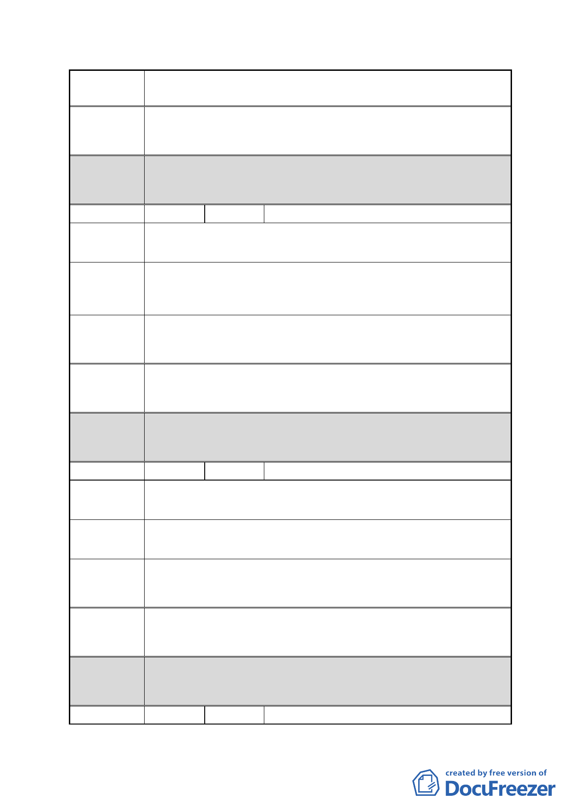

案 名 擬定臺北市南港區鐵路地下化沿線土地細部計畫案
市府回應 同編號 7。
說明
都委會 1.本陳情地點非屬修正後細部計畫範圍。
決議 2.同意以市府回應說明辦理。
編號
14 陳情人 李心惠、李蔡寶來
陳情地點 南港路二段 23 巷 1 號（南港區南港段四小段 419 地號）
陳情理由
建議辦法
因為是小地主，原本住宅就是供全家自住使用，如果變更商
業區，雖利益較高，對我們自住根本沒有用，所以如果變遊
民，那不如不要變更。
免予回饋。
市府回應 同編號 7。
說明
都委會 1.本陳情地點非屬修正後細部計畫範圍。
決議 2.同意以市府回應說明辦理。
編號
15 陳情人 刁承德
南港路二段 23 巷 13 號
陳情地點
陳情理由
建議辦法
土地面積小地主是自用住宅，如果參加就會失去住的房子和
土地，因此反對重劃。（地不到 20 坪）
應可自己規劃不必回饋土地，更應放寬容積。
市府回應 同編號 7。
說明
都委會 1.本陳情地點非屬修正後細部計畫範圍。
決議 2.同意以市府回應說明辦理。
編號
16 陳情人 廖信華
- 27 -